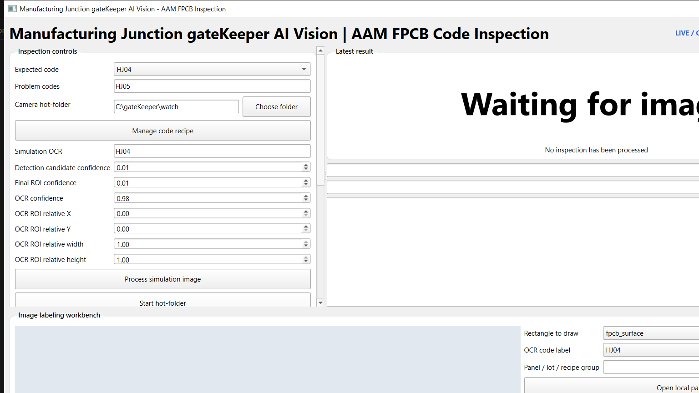

SOP-FAV-001 | Offline field installation, Frame Gate setup, labeling and CPU fine-tuning | Revision 1.1.1
1. Purpose and safety boundary
Purpose
Read the FPCB code before AAM input. Results are OK, Abnormal, Error (registered problem code), or System Error.
Default recipe
Expected normal: HJ04. Registered problem code: HJ05. Only O/0 is corrected automatically.
Field trial safety: keep PLC in Simulation or Dry-run. Do not connect a stop, reject, or picker output until the site safety review and independent real-lot validation are approved.
2. Install and open the offline application
Copy the release ZIP to a local SSD, for example D:\gateKeeper. Do not run from USB or a network share.
Extract all files. Keep the extracted folder together; do not move _internal, models, config, or docs.
Run Manufacturing Junction gateKeeper AI Vision.exe. Obtain local IT approval if Windows shows a security warning.
The first hot-folder start loads the CPU detector and OCR model in the background. The window must remain responsive.
Pass condition: the app shows HJ04/HJ05. After starting the folder it shows LIVE / CPU / HOT-FOLDER / FRAME GATE, not System Error.
3. Select the camera folder and start Frame Gate
Create or select one local camera output folder, for example D:\gateKeeper\camera-watch. Configure the camera to save unique final JPG/PNG files there.
In the dashboard, press Choose folder, select that same folder, then press Start hot-folder.
With the view empty, press Capture Empty Background. Open Frame Gate Settings; use 150 ms camera interval, two stable frames, two empty frames to rearm, and 2000 ms refractory period as the initial field value.
Confirm the blue LIVE text. A selected stationary frame alone proceeds to YOLO/OCR; empty, moving, duplicate, and refractory frames are not production decisions.

Verified UI reference: Camera hot-folder selection is on the left; Frame Gate and result panel are visible without hiding controls. Scroll the left panel to access labeling and training controls on smaller displays.
Manufacturning Junction gateKeeper AI Vision SOP
Continue: recipe management, labeling, CPU fine-tuning and safe field trial
5. Manage codes, label real images, and export the dataset
Press Manage code recipe. Add, edit, or delete only approved four-character uppercase codes. Keep normal and problem lists separate; save the active expected normal code.
Open Image labeling workbench and press Open local panel image. Draw fpcb_surface around the FPCB, then draw code_roi tightly around the visible code.
Select the OCR code, enter panel/lot/recipe group, and press Save reviewed label. Use the same group for frames from the same physical panel or lot.
Press Export grouped YOLO dataset. Fix every validation error. Never place frames from one panel/lot in both training and test splits.
Open local panel image
→
Draw FPCB + code ROI
→
Save code and group
→
Export grouped dataset
6. CPU fine-tuning and approval
In Training progress, select the exported dataset and the approved checkpoint. Initial CPU values: 640 image size, batch 1–2, workers 0, 100 epochs, early-stop patience 20.
Start CPU training. Check the validation graph, exact-code accuracy, problem recall, confusion matrix, and saved best checkpoint.
Test a candidate only on a held-out real lot that was not used in labeling or training. Do not auto-promote a model from operator feedback.
Promotion gate: approve only after independent field holdout results meet the site target, no problem sample becomes normal, ROI overlays are correct, and the PLC fail-safe review is signed.
7. End-of-shift and recovery
Check
HJ04 green; HJ05 red; blurred/unknown never green.
Frame Gate suppressions do not affect decision counters.
Alarm/Mute, archive, overlay, duplicate guard, and latest popup replacement work.
Recover
On System Error: stop monitoring; check disk, folder permission, model files, and logs/startup-errors.log.
Use docs/OPERATOR_GUIDE.md, docs/TRAINING.md, and docs/PLC_INTEGRATION.md for detail.
Stop and escalate: unexpected green result, wrong ROI, missing archive, System Error, or any request to enable physical PLC outputs without formal safety approval.